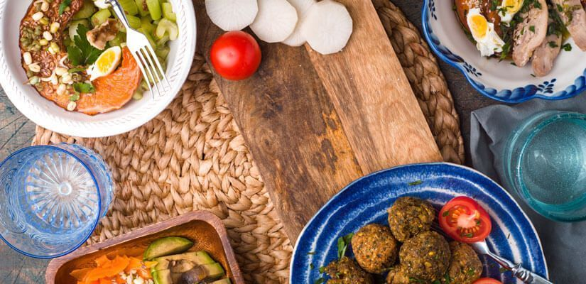
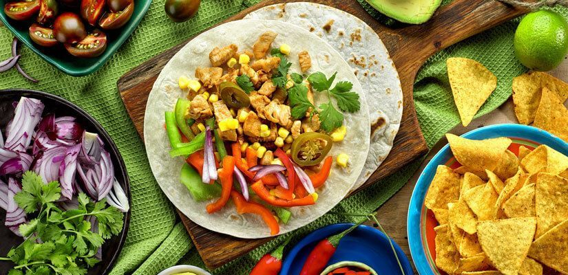
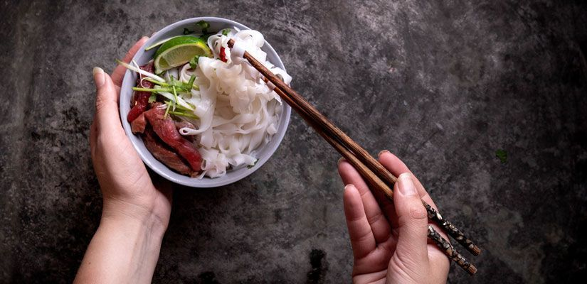
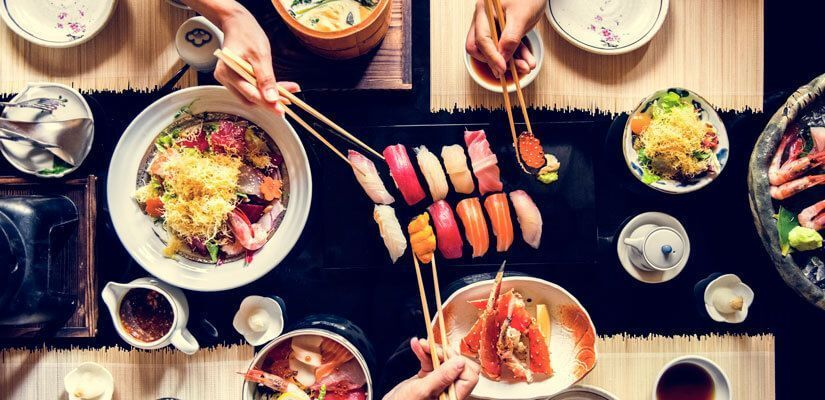
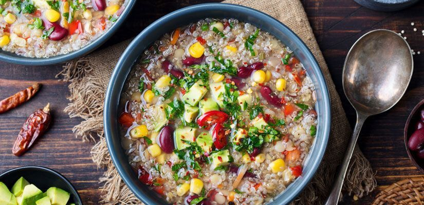

Instituto tecnologico de Tijuana
| No Control: | 20210575 |
| Nombre: | Anthony Guillen Martinez |
| Carrera: | Ingenieria en Sistemas Computacionales |
| Materia: | Programacion Web |
| Origen de la comida | Nutrición | Gastronomía | Formulario |
Comida
En esta sección encontrarás información sobre diferentes tipos de comida, recetas, ingredientes y más.
Además de encontrar información sobre diferentes tipos de comida, recetas e ingredientes, también podrás aprender sobre la historia y cultura detrás de los platillos más populares. También podrás encontrar consejos y trucos para cocinar, así como recomendaciones de restaurantes y lugares para probar comida auténtica de diferentes partes del mundo. ¡Explora nuestra sección de comida y descubre nuevas delicias culinarias!
Tipo de cocina #1: Comida libanesa
Es una de las cocinas más elaboradas entre sus parientes culinarios árabes, esto se debe a la combinación de influencias que tiene.
En la cocina libanesa se aplica un toque de la sofisticación pijotera que es el aporte del período de ocupación de los franceses, también se puede notar las influencias fenicias en sus platos árabes.
Tipo de cocina #2: Comida mexicana
Aunque el chile, es decir, los sabores picantes, es la característica más reconocida de la comida mexicana, no quiere decir que se limita a ello.
Es una cocina con influencias españolas, mayas y aztecas, en la que además del chile también predomina el tomate, cacao y aguacate.
Tipo de cocina #3: Comida vietnamita
Esta cocina predomina por el uso de la salsa de soja, hoisin y de la salsa de pescado. Además, también puede señalarse la abundancia de vegetales, especias y de hierbas.
De igual forma se caracteriza por el uso de las hojas de lima kaffir y la hierba de limón. Es una cocina con un carácter único.
Tipo de cocina #4: Comida japonesa
En la cocina japonesa se puede observar, saborear y sentir la pasión por el mar. De hecho, Japón es el mayor consumidor de pescado por cápita del mundo.
Los acompañamientos de la comida japonesa pueden ser variados, pero resaltan el jengibre, vinagre, sake, wasabi y la soja. Es una cocina sana y nutritiva.
Tipo de cocina #5: Comida peruana
Aunque también predominan los mariscos y pescados en la cocina peruana, y productos como tiraditos y ceviche, la misma no se somete a estos productos.
De hecho, en la cocina peruana se pueden observar ingredientes tanto autóctonos como de influencias españolas.
| Origen de la comida | Nutrición | Gastronomía | Formulario |